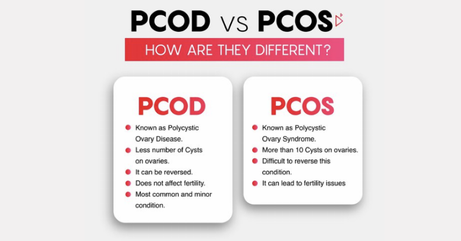
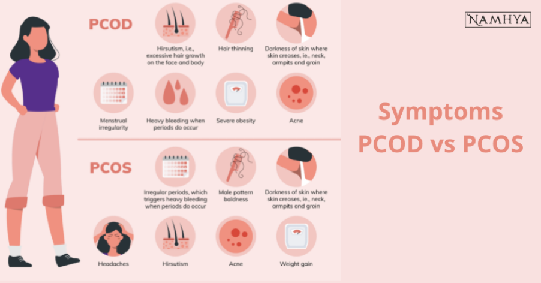

What is PCOD?
PCOD causes irregular menstrual cycles because the ovaries produce and release an excessively large number of immature eggs throughout the ovulation cycle.
The eggs are trapped inside the ovary, increasing the number of eggs produced for months.
Even while it may seem harmless, partially matured and stored eggs in the ovaries cause cysts to form in the ovary.
The body's cyst-like growths also increase androgen synthesis.
Women with PCOD have enlarged ovaries that contain small collections of fluid-filled sacs. These sacs are called follicles, and each includes an egg.
However, instead of releasing an egg every month, like ordinary women's ovaries do, these women may get fewer periods or no periods at all due to anovulation (the absence of ovulation).
Anovulation results when your body doesn't release one or more eggs during your menstrual cycle because it doesn't have enough estrogen and progesterone for proper hormonal function.
What Specifically is PCOS?
Unbalanced levels of estrogen are a symptom of PCOS.
Period irregularity or absence, infertility and other issues with fertility, hirsutism (unwanted body and facial hair growth), weight gain, and type 2 diabetes are all possible outcomes.
Due to PCOS, your ovaries' small glands release an abnormally high amount of male hormones.
Your ovaries' follicles thicken more than usual as a result of this. As a result of the way that they appear on ultrasound scans, these swollen follicles are known as ovarian cysts.
Although there is no known treatment for PCOS, symptoms can be controlled
Women between the ages of 12 and 51 are most susceptible to developing PCOS.
Main Differences Between PCOS and PCOD

- Causes
- PCOS Causes: Increased levels of testosterone, increase in luteinizing hormone, higher levels of prolactin.
- PCOD Causes: Precise cause unknown, linked to high amounts of male hormones, low-grade inflammation, too much insulin, and genetics.
- Symptoms

- PCOD Symptoms:
Irregular or absent menstruation.
Excess body hair, acne, and weight gain.
Excessive hair growth on the face and body.
Male pattern baldness in women who don't have male relatives with the condition./ol>
Mood changes.
Negative interpersonal interactions.
Lack of confidence.
Negative self-perception.
Irregular eating and sleeping schedules.
- PCOS Symptoms:
No periods.
irregular or infrequent bleeding infertility.
skin tags.
male pattern baldness.
- Treatment
- PCOS Treatment: Medications, lifestyle changes, reproductive treatments.
- PCOD Treatment: Birth control pills, lifestyle changes, ovarian drilling.
- Adverse Effects on Health
- PCOD can lead to diabetes, heart disease, and high cholesterol levels.
- PCOS is associated with insulin resistance, obesity, and type 2 diabetes.
Keeping Your Polycystic Ovary Syndrome Symptoms at Bay
Maintaining a Healthy Weight
Weight loss is a useful strategy for preventing the effects of hormonal imbalance and insulin resistance.
“Even small amounts of weight loss, such as 5 to 10% of your body weight, can alleviate symptoms, restore ovulation, and enhance the likelihood of achieving pregnancy if that is your goal,” explains Dr. Maguire.
Establishing a Consistent Exercise Routine
Exercise is also believed to have intrinsic benefits in alleviating PCOS symptoms, and the CDC recommends that adults aim for 150 minutes of physical activity each week.
“The best exercise regimen for PCOS is one you will stick with,” notes Dr. Maguire. “Anything that you find fun or will constantly engage in is the best activity to choose.”
Monitoring Your Sugar Intake
Blood sugar regulation is crucial for PCOS because many people with the condition are resistant to Normally, insulin regulates blood sugar levels by transporting glucose from the bloodstream into cells. When cells stop responding to this insulin, it is referred to as insulin resistance. Insulin resistance is linked to some of the most common comorbidities of PCOS, including obesity, cardiovascular disease, and type 2 diabetes.
“There is no one diet that has been proven in studies to work best for PCOS,” shares Dr. Maguire. “However, monitoring your carbohydrate intake can help regulate and control your blood sugar levels.”
IF YOU ARE WORRIED ABOUT LOSING WEIGHT WITH PCOS
1. Reduce your carb intake
Decreasing your carb consumption may help manage PCOS because of carbs’ impact on insulin levels.
Insulin resistance occurs when your cells don’t respond normally to the hormone insulin. Anywhere from 35% to 80% of people with PCOS experience this.
Insulin is necessary for blood sugar regulation and energy storage in your body. Research associates high levels of insulin with increased body fat and weight gain in the general population and in people with PCOS.
In one study, people with obesity, PCOS, and insulin resistance first followed a 3-week diet of 40% carbs and 45% fat and then a 3-week diet of 60% carbs and 25% fat. Protein intake was 15% of total daily calories during each phase.
While blood sugar levels were similar during the two phases of the diet, insulin levels went down 30% during the lower carb, higher fat phase.
What’s more, a low glycemic diet may benefit people with PCOS. The glycemic index is a measurement of how quickly a particular food raises blood sugar.
According to a 2021 review, low glycemic diets could reduce insulin resistance, fasting insulin levels, and belly fat in people with PCOS more effectively than high glycemic diets.
2. Get plenty of fiber
Because fiber helps you stay full after a meal, a high fiber diet may promote weight loss in people with PCOS.
In the United States, the Dietary Reference Intake for fiber is 14 grams (g) per 1,000 calories, or around 25 g per day for women. However, most Americans consume only about 15 g of fiber per day.
In one study, higher fiber intake was linked to lower insulin resistance, less total body fat, and less belly fat in people with PCOS — but not in those without PCOS.
In another small study in 57 people with this condition, higher fiber intake was associated with lower body weight.
3. Eat enough protein
Protein helps stabilize blood sugar and increases feelings of fullness after a meal.
It may also aid weight loss by reducing cravings, helping you burn more calories, and regulating hunger hormones.
In one small 2012 study, 57 people with PCOS consumed either a high protein diet consisting of more than 40% of calories from protein and 30% from fat or a standard diet consisting of less than 15% protein and 30% fat.
Individuals in the high protein group lost an average of 9.7 pounds (4.4 kilograms) after 6 months — significantly more than those in the control group.
If you’re concerned you’re not getting enough protein, you can add it to your meals or choose high protein snacks. Healthy high protein foods include eggs, nuts, dairy, meat, and seafood.
4. Eat healthy fats
Having plenty of healthy fats in your diet may help you feel more satisfied after meals and tackle weight loss and other symptoms of PCOS.
In one study in 14 people with PCOS, following a high fat ketogenic diet led to significant reductions in body weight, body mass index (BMI), and belly fat after 12 weeks .
Additionally, although fats are rich in calories, adding healthy fats to meals can expand stomach volume and reduce hunger. This may help you eat fewer calories throughout the day, according to one older study.
Avocado, olive oil, coconut oil, and nut butter are some foods that contain healthy fats. Combining healthy fat with a protein source can further increase the filling effects of meals and snacks.
5. Eat fermented foods
Healthy gut bacteria may play a role in metabolism and weight maintenance.
Studies suggest that people with PCOS may have fewer healthy gut bacteria than those without this condition.
Emerging research also suggests that certain probiotic strains may have positive effects on weight loss.
However, other recent research has turned up mixed results.
Still, eating foods high in probiotics — such as yogurt, kefir, sauerkraut, and other fermented foods — may help increase the number of beneficial bacteria in your gut.
You can also try taking a probiotic supplement, though research is lacking on which strains may be most beneficial for those with PCOS.
6. Practice mindful eating
People with PCOS may have tried many diets and are three times more likely to have eating disorders than people without PCOS
Mindful eating is one potential solution. It promotes an increased awareness of bodily cues such as hunger and fullness.
Mindfulness-based approaches to food may help address potentially problematic eating behaviors — especially binge eating and emotional eating.
What’s more, studies suggest that mindful eating practices may be linked to weight loss.
7. Limit processed foods and added sugars
Another tip to lose weight with PCOS is to cut down on your intake of less nutritious foods.
Processed foods and added sugars may raise blood sugar levels and increase your risk of insulin resistance, which is linked to obesity.
People with PCOS may process sugar differently than those without it. Research shows that women with PCOS experience larger spikes in blood sugar and insulin levels after consuming the same amount of sugar as women without this condition.
Studies also indicate that minimally processed foods raise blood sugar less than highly processed foods and are more satisfying.
Furthermore, experts recommend that people with PCOS limit their consumption of added sugars and refined carbs. This may help them manage symptoms and maintain a healthy body weight.
Foods high in added sugar and refined carbs include cakes, cookies, candy, and fast food.
8. Reduce inflammation
Inflammation is your body’s natural response to infection or injury.
But chronic inflammation, which is common in people with PCOS, is linked to obesity. Sugar and processed foods may contribute to inflammation.
In one small 2013 study, 16 women with PCOS who took a one-time dose of 75 g of glucose — a particular type of sugar — had higher blood markers for inflammation than those without this condition.
A diet like the Mediterranean diet — which is high in fruits, vegetables, whole grains, olive oil, and omega-3-rich foods such as fatty fish — may protect against inflammation.
9. Exercise regularly
Exercise is a well-known strategy for increasing weight loss.
In one small 12-week study, 16 women did 45–60 minutes of cardio 3 times per week. Those with PCOS lost 2.3% of their body fat, compared with 6.4% in the control group.
While people with PCOS lost less fat than those without this condition, the exercise regimen did result in loss of belly fat and improvements in insulin sensitivity.
Weight training has also been shown to be beneficial for people with PCOS.
In one small study, 45 people with PCOS did weight training 3 times per week. After 4 months, they had lost belly fat and gained lean body mass while reducing testosterone and blood sugar levels.
10. Get enough sleep
Sleep is increasingly acknowledged as central to overall health.
If you have PCOS, you may experience sleep disturbances, including excessive daytime sleepiness, sleep apnea, and insomnia.
Lack of sleep has been shown to increase the activity of hormones that drive hunger, such as ghrelin and cortisol, which may cause you to eat more throughout the day.
In fact, insufficient sleep is associated with a higher risk of having overweight or obesity.
One study in 156 people in a weight loss program found that markers of poor sleep quality — including more awakenings, lower sleep efficiency, and longer time to fall asleep — were associated with less weight loss and lower odds of adhering to recommendations for physical activity.
Additionally, studies have linked better quality sleep to fat loss.
In one study, healthy adults who slept less than 6 hours per night had a 12% higher risk of developing belly fat than those who slept 6–8 hours per night.
11. Manage your stress
Because stress is a risk factor for weight gain, managing or reducing stress may help you manage your weight.
Stress increases levels of cortisol, a hormone that your adrenal glands produce. Chronically high cortisol levels are linked to insulin resistance and weight gain.
Chronic stress also increases your risk of gaining belly fat. In turn, belly fat increases inflammation, which triggers your body to make more cortisol, creating a vicious cycle.
To lower your cortisol levels, focus on stress management practices.
Studies suggest that techniques such as meditating, practicing yoga, and spending time in nature can help lower cortisol levels.
12. Consider supplements
If you have PCOS, several supplements may help you manage your weight and symptoms.
Myo-inositol is a supplement that may lead to weight loss in people with PCOS. Inositol is a type of sugar that helps improve insulin sensitivity. Myo-inositol is a specific form of inositol.
Interestingly, one review of 15 studies found that inositol supplementation could be linked to a reduction in BMI.
Carnitine, an amino acid found in meat, may also lead to weight loss.
A review of nine studies concluded that carnitine supplementation could effectively reduce fasting blood sugar levels and BMI in people with PCOS
The bottom line
PCOS can it make it difficult for people to lose weight.
A balanced, nutritious diet — low in inflammatory foods such as refined carbs and highly processed foods and rich in whole foods, protein, healthy fats, and fiber — may aid weight loss. Certain supplements may help as well.
It’s also important to consider lifestyle factors. Regular exercise, stress management, and sleep are all important to weight loss.
If you have PCOS and are having trouble losing weight, you may want to try some of the tips above.